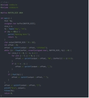

pwn13-19
*pwn13*
如何使用GCC？编译运行后即可获得flag
题目说了gcc
gcc -o flag -flag.c
之后就编译出了一个flag的文件（无后缀），然后./flag就可以运行得到flag
*pwn14*
请你阅读以下源码，给定key为”CTFshow”，编译运行即可获得flag
Ida

代码的大致逻辑就是读取一个名为"key"的文件，然后根据该文件的内容通过一个while循环再嵌套两个for循环
那一个名字为key的文件怎么搞？内容是什么？
Echo CTFshow > key
Gcc -o flag -flag.c
./flag
拿到flag
*pwn15*
编译汇编代码到可执行文件，即可拿到flag
nasm -f elf64 flag.asm
Gcc -o flag -flag.o
./flag
拿到flag
*pwn16*
使用gcc将其编译为可执行文件
Gcc -o flag -flag.s
./flag
·
*pwn17*
有些命令好像有点不一样？
不要一直等，可能那样永远也等不到flag
Nc一下，四个选项

3选项似乎能给出flag，但是要等好久，ida看看要等…114514秒，换算一下约等于31.8小时，ps：傻逼。后面还有system，而且在其他选项当中也有system，而在选项2当中有system，并且可以自行输入system的内容，这应该算是一种思路连接吧，最终得到答案。

只有选项2可以用了，
read(0, buf, 0xAuLL);读取输入的9个字符串给buf
strcat(dest, buf);把buf赋值给dest
system(dest);以system输出dest(类似拼接)
那么我们要输入什么呢？而且还要是9个字符串!
原理上，只要不限制长度，cat /ctfshow_flag应该能拿到flag
但是有限制长度，
\1. 根据ctfpwn的考题分析，肯定要拿到shell的，所以，我们system里面要用/bin/sh，就可以
\2. 或者找到其他方法，让输入的字符小于等于9个字符串，用cat /ctf*就可以了
ctfshow{47387d02-8a66-493f-a931-5551b99a4786}
*pwn18*
仔细看看源码，或许有惊喜
假作真时真亦假，真作假时假亦真


ida分析，有fake和real函数，分析得：
fake函数是在文本flag is here 后面跟着一个/ctfshow_flag
Real函数是把文本flag is here 更改为/ctfshow_flag(就是文本，不是指令)
>>
>
综上，应该进行fake函数，并且一定不要运行real函数
Ida分析得，输入9就可以了
ctfshow{39868dcb-b2f7-49ac-83dd-24ea77e44393}
*pwn19*
关闭了输出流，一定是最安全的吗？

这是ida看到的

nc之后发现已经进入了else进程，应该是别人wp里面的子进程了吧
Fclose(_bss_start)关闭了输出流，就是你无法看到回显，就算你输入了，cat ctfshow_flag也是无法看到内容的
在每个代码后面加上>&0 即可看到回显

大致意思应该就是把回显结果覆盖到终端后面或者键盘输入的后面
在之后就可以输入cat ctfshow_flag >&0 即可
最后提一点，我们每次nc进去都是在else里面,我们每次输入一个指令之后得重新nc，因为我们每次输入指令之后子进程就会结束并进入if当中。
ctfshow{478f3d3b-002f-461d-afaa-4ba72d92db9b}